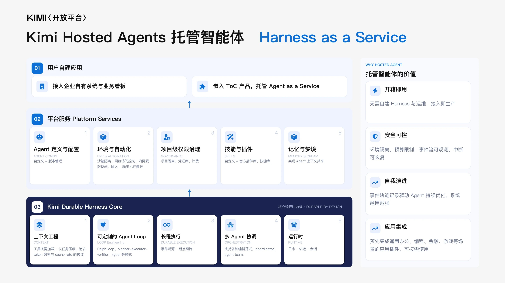
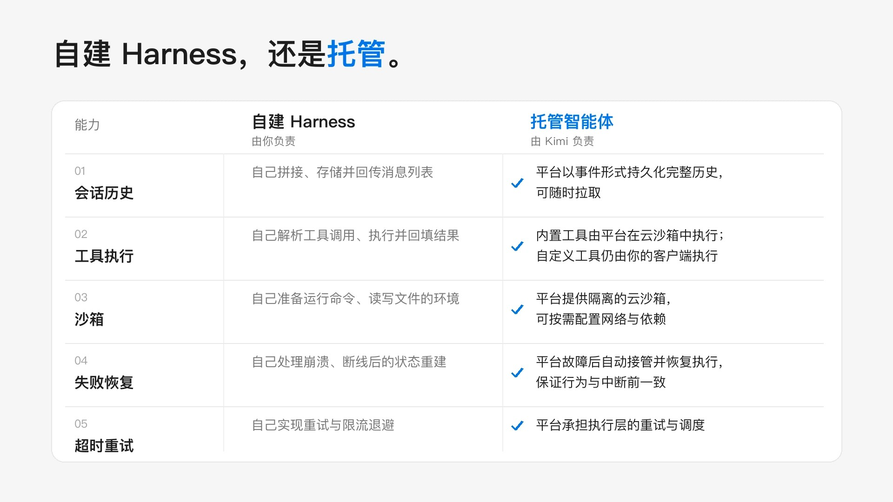
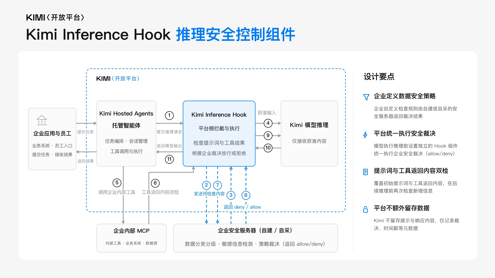
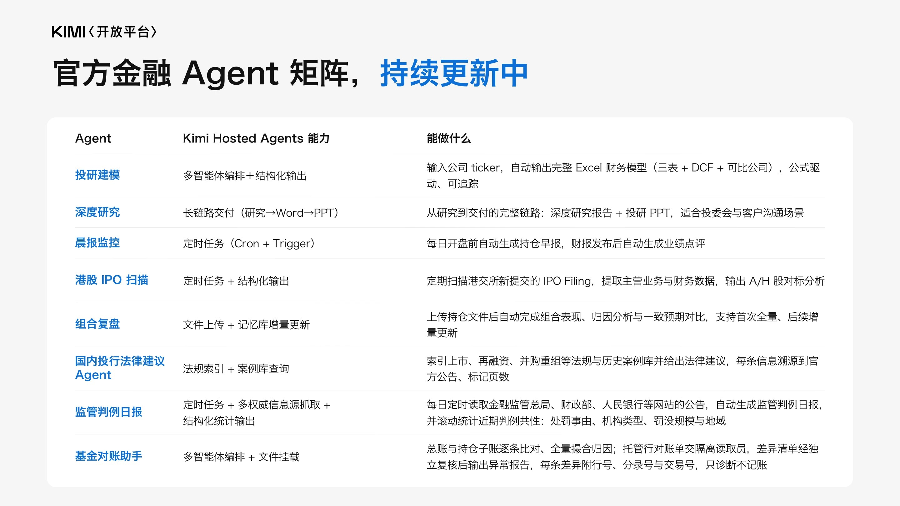
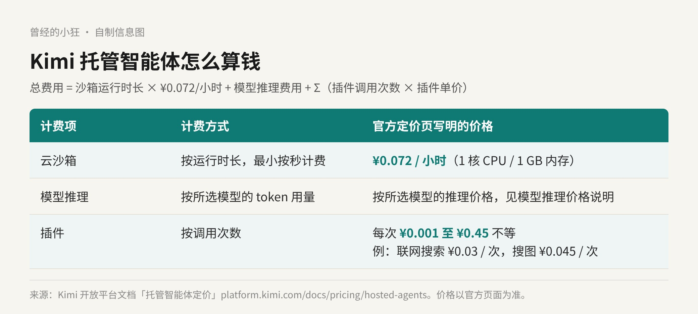

这一年聊 Agent，大家的眼睛多半盯着模型：谁更聪明，谁更便宜，谁的上下文更长。可真要把一个 Agent 放进公司里天天跑，模型只是其中一块。剩下那一大块，行内有个专门的叫法：Harness。
11 月 5 日，月之暗面发布了 Kimi Hosted Agents，中文名叫「托管智能体」。官方给它起的副标题很直白：Harness as a Service。这次 Kimi 卖的不是又一颗新模型，而是把 Agent 跑起来需要的那套底座整个搬到云上，租给企业和开发者用。

Kimi 官方架构图：最底层是 Kimi Durable Harness Core，中间是平台服务，最上面才是企业自建的应用。图片来源：kimi.com/news/kimi-hosted-agents
Harness 直译是「马具」。放在 Agent 身上，可以理解成套在模型外面的那一圈运行框架：模型负责想，Harness 负责让它能动手，而且动得稳。
官方的说法是，一个 Agent 要真正投入生产，企业通常得先花几个月搭一套可靠的 Harness：代码执行环境、上下文与会话管理、工具调用、权限控制、任务中断后的恢复。上线之后，这套东西还要一直有人养着。
我觉得这句话说到了点子上。做过 Agent 原型的人大概都有体会：演示阶段，一个模型加几个工具就能跑；真要它连着干几个小时、半路断线还能接着来、每一步都查得到，工作量就全落在模型外面了。
Kimi 的产品文档里有一张对照表，把自建和托管的分工列得很清楚：
会话历史：自建要自己拼接、存储、回传消息列表；托管由平台以事件形式持久化完整历史，随时可以拉取。
工具执行：自建要自己解析工具调用、执行、再回填结果；托管时，内置工具由平台在云沙箱里执行，自定义工具仍由你自己的客户端执行。
沙箱：自建要自己准备跑命令、读写文件的环境；托管由平台提供隔离的云沙箱。
失败恢复：自建要自己处理崩溃和断线后的状态重建；托管时平台故障后会自动接管并恢复执行，官方称行为与中断前一致。
超时重试：执行层的重试和调度，由平台承担。

官方对照图：自建 Harness 由你负责，托管智能体由 Kimi 负责。图片来源：kimi.com/news/kimi-hosted-agents
官方也把边界划得很清楚。Kimi 开放平台现在是两种产品并列：想自定义 Harness、精细控制每一步，直接调模型推理 API；任务要长时间运行或异步执行，又不想自建沙箱和会话基础设施，就用托管智能体。
先说运行环境。托管智能体提供 7×24 小时的云端环境，支持长程任务执行和多智能体协作，底层运行环境的维护和升级由 Kimi 负责。
再说工具。官方自带 140 多项技能（Skills）和 30 多个插件，覆盖联网检索、专业数据查询、办公文档处理和内容生成。除了官方这一套，也支持自定义技能、插件、MCP 服务和自定义工具，把企业自己的工具和数据源接进来。官方注明，数据源和插件库还在持续扩充。
然后是管控。每个会话跑在独立沙箱里；网络访问权限可以控制，企业能设定操作边界，必要时随时中止会话；执行过程留痕可查，可以导出审计；计费规则和用量报表能让企业看清每个 Agent 项目花了多少资源、多少钱。
官方给了两类典型用法。一类是对内，接进企业内部系统，做业务监控、研究分析、运维响应。另一类是对外，嵌进企业自己的产品，比如 App 里的投研助手、客服助手，文档里还举了游戏里的策略顾问。
上手的门在 platform.kimi.com，注册登录就能体验。官方给了三种跑通第一个任务的方式：kha CLI、网页控制台和 API。其中 kha CLI 还可以放进 AI 编程助手里用，用自然语言创建智能体、提交任务、取回产物。
这次发布里，最值得企业安全团队看一眼的，是一个叫 Kimi Inference Hook 的独立安全组件。
它可以和托管智能体搭配，对接企业自建或采购的安全服务。每次模型推理之前，它会检查任务输入和工具返回的内容。检查规则由企业自己定义，放行还是拒绝由 Hook 执行。只有通过企业安全检查的内容才会进入模型推理，未获准的隐私和敏感数据会被拦在推理之前。

官方流程图：任务输入和工具返回内容先送到企业安全服务器裁决，放行的内容才进入模型推理。图片来源：kimi.com/news/kimi-hosted-agents
官方这张图的设计要点里还写了一条：Kimi 不留存提示与响应内容，只记录裁决结果、时间戳等元数据。
要注意的是，Inference Hook 目前只对企业认证用户定向开放，有需求得联系官方销售。同样只给企业认证用户的，还有「自托管环境」：把沙箱工具放到你自己管理的主机上运行，模型调用、智能体编排和会话管理仍由平台负责。需要访问内网服务，或者代码、文件必须留在自己机器上处理的团队，会用得上它。
发布文里，首批放出的是 8 个金融 Agent 模板：投研建模、深度研究、晨报、港股 IPO 扫描、组合复盘、国内投行法律建议、监管判例日报、基金对账。企业可以把模板复制到自己的项目空间，接上内部研报、私有数据库，再按自己的流程改。

官方金融 Agent 矩阵：8 个模板分别用到多智能体编排、定时任务、文件挂载等能力。图片来源：kimi.com/news/kimi-hosted-agents
这张表里有几处挺具体。投研建模输入一个公司 ticker，输出完整的 Excel 财务模型，含三表、DCF 和可比公司；国内投行法律建议要求每条信息都溯源到官方公告，并标出页数；基金对账在差异清单经独立复核后才输出异常报告，官方特意写明「只诊断不记账」。
文档站里的官方模板现在列了 12 个，除了这 8 个金融模板，还有 AI 小游戏研运、玩家游戏顾问、SRE 事故响应和出海社群运营。发布文里还放了顺丰同城和中信建投证券两家的使用评价。
为什么先挑金融？我的理解是，金融场景任务长、材料多、合规要求重，恰好最需要沙箱、留痕和推理前拦截这几样东西。模板先在金融立住，比泛泛地说「什么都能做」更有说服力。
托管智能体按量计费，费用分三块：云沙箱按运行时长，模型推理按 token，插件按调用次数。官方定价页给的公式是：总费用 = 沙箱运行时长 × 0.072 元/小时 + 模型推理费用 + 各插件调用次数 × 插件单价之和。
沙箱的规格是 1 核 CPU、1 GB 内存，每小时 0.072 元，最小按秒计费。算下来，一个沙箱连续跑满 24 小时是 1.728 元。
模型推理部分，按你选的那个模型的推理价格算。插件按次收费，从每次 0.001 元到 0.45 元不等，比如联网搜索每次 0.03 元，搜图每次 0.045 元，各类金融数据插件分布在不同档位。

自制信息图：托管智能体的三块费用。数据来自 Kimi 开放平台「托管智能体定价」页。
沙箱本身很便宜。按这个结构看，真正的大头多半还是模型 token 和数据插件，尤其是要反复查专业数据的金融任务。打算上生产的团队，先拿一个模板跑几天，看看用量报表，比空算靠谱。
它不是 Kimi App 里的新按钮，普通用户日常聊天、写东西，不会直接碰到它。它的位置在开放平台上，面向的是要把 Agent 做进业务、做进产品的企业和开发者。注册就能试，但 Inference Hook、自托管环境这几样企业最看重的安全能力，要先完成企业认证。
所以我会这样分：已经在做 Agent 原型、卡在「上线后谁来维护底座」这一步的团队，值得认真试；任务要跑很久、要异步、要留痕审计的，也很对路。反过来，如果你已经有一套成熟的 Harness，或者就是想精细控制每一步，官方自己的建议也是直接用模型推理 API。
以前比的是谁的模型更强。现在多了一个比法：谁能让 Agent 在云上稳稳当当跑一整夜，第二天早上还交得出一份查得到每一步的账。
来源清单：
https://www.kimi.com/news/kimi-hosted-agents
https://platform.kimi.com/docs/hosted-agents/overview
https://platform.kimi.com/docs/pricing/hosted-agents